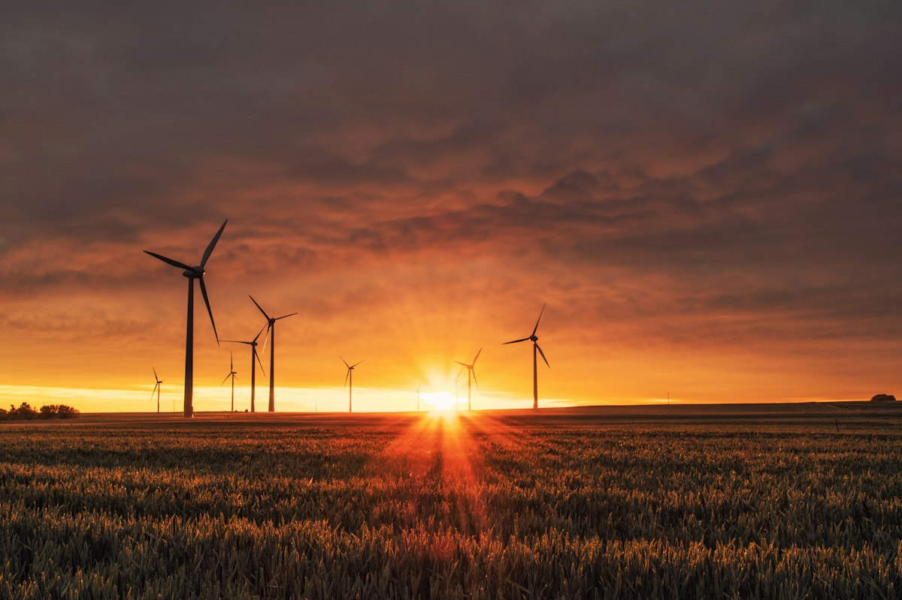

Learn the logistics, safety protocols and predictive maintenance strategies used to keep offshore wind farms running at scale.

Offshore wind farms require specialized logistics and maintenance planning to stay operational in harsh marine environments. This course covers vessel scheduling, technician safety, and the predictive maintenance models used by operators such as Ørsted and Siemens Gamesa.
You'll leave with practical frameworks for planning maintenance windows around weather systems, interpreting turbine sensor data to predict failures before they happen, and coordinating offshore crews safely and efficiently.
Fully online across 13 weeks, with three live virtual sessions and a final project based on a real maintenance case. Expect 4–6 hours of self-paced study per week.
Open to engineers, technicians and project managers with a background in mechanical, electrical or marine engineering, or equivalent practical experience in the wind energy sector.